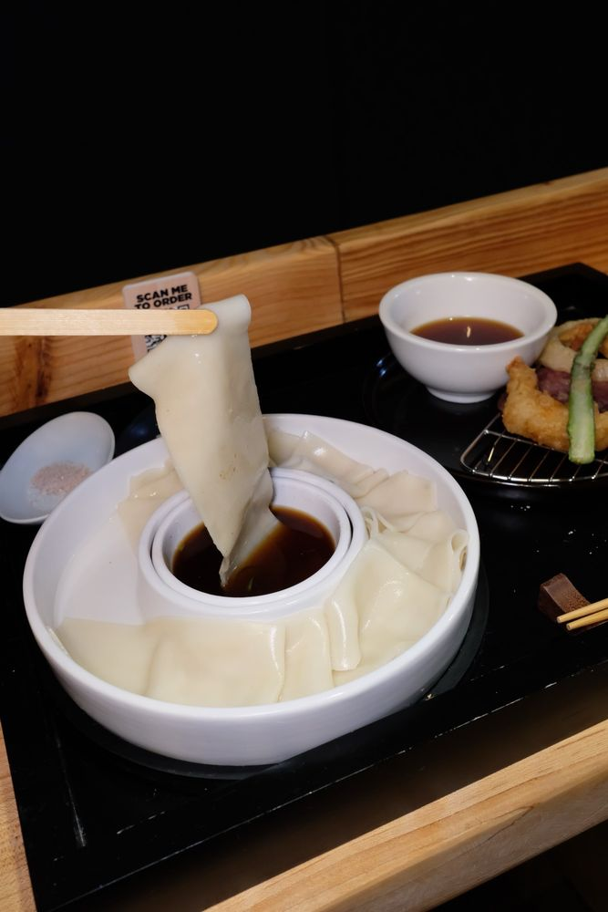

ü§ç Fat Dipping Udon
Plate: Around $23
Price: $$

ü§ç Himokawa Udon
Plate: Around $23
Price: $$

ü§ç Matcha Udon
Barely has matcha flavor
Plate: Around $23
Price: $$
ü§ç Tempura
Bacon Tempura, Shrimp Tempura, Sweet Potato Tempura, onion Tempura and, veggie Tempura
Plate: Come with the noodles order extra for aditional price.
Price: $
Location & Hours
üìç Location: 124 2nd Ave, New York, NY 10003
üïí Hours:
Tues - Fri: 12:00 PM - 3:00 PM, 5:00 PM - 9:00 PM
Sat: 12:00 PM - 9:00 PM
Sun: 12:00 PM - 8:00 PM